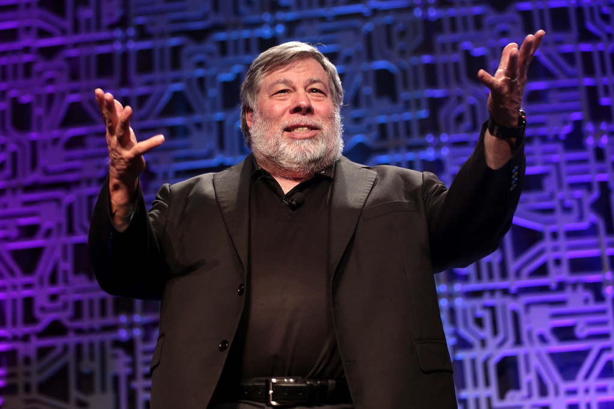

Deze website gaat over Steve Wozniak. Op deze website kan je kan je informatie over Steve Wozniak vinden. Je kan zijn biografie lezen, lezen waarom hij bekend is geworden en een filmpje kijken. Alles makkelijk door het overzichtelijke menu. Dus veel leesplezier.
